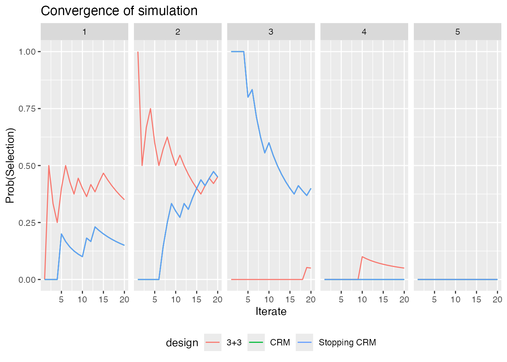
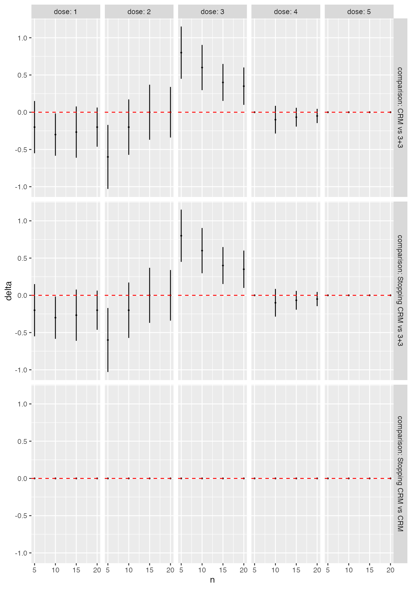

vignettes/A710-SimulationComparison.Rmd
A710-SimulationComparison.RmdThe escalation package by Kristian Brock. Documentation
is hosted at https://brockk.github.io/escalation/
This vignette focuses on the common task of comparing competing
dose-escalation designs by simulation. Before reading on, be sure you
have read the README
file for a general explanation of how to compose dose-finding
designs in escalation; and the Simulation vignette for a general
introduction to using simulation.
In simulate_compare, we implement the method of Sweeting et al. (2024) to efficiently compare
dose-finding designs. The crux of this method is to ensure that the same
simulated patients are used for each competing design so that, for
instance, if a patient is given dose 2 by one design and experiences
toxicity, then that patient will also experience toxicity if given dose
2 or above by any other design. Ensuring consistency across simulated
iterates in this way reduces Monte Carlo error and allows much faster
identification of differences between designs.
For example, let us compare the behaviour of the 3+3 and CRM designs investigated above. We start by defining the competing designs in a list with convenient names:
library(escalation)
target <- 0.25
skeleton <- c(0.05, 0.1, 0.25, 0.4, 0.6)
designs <-
list(
"3+3" = get_three_plus_three(num_doses = 5),
"CRM" = get_dfcrm(skeleton = skeleton, target = target) %>%
stop_at_n(n = 12),
"Stopping CRM" = get_dfcrm(skeleton = skeleton, target = target) %>%
stop_at_n(n = 12) %>%
stop_when_too_toxic(dose = 1, tox_threshold = 0.35, confidence = 0.8)
)Here we will compare three designs: 3+3; CRM without a toxicity stopping rule; and an otherwise identical CRM design with a toxicity stopping rule. The names we provide will be reused.
For illustration we use only a small number of replicates:
num_sims <- 20
true_prob_tox <- c(0.12, 0.27, 0.44, 0.53, 0.57)
sims <- simulate_compare(
designs,
num_sims = num_sims,
true_prob_tox = true_prob_tox
)
#> Running 3+3
#> Running CRM
#> Running Stopping CRMWe can vertically stack the simulated performance of each design:
summary(sims)
#> # A tibble: 18 × 7
#> dose tox n true_prob_tox prob_recommend prob_administer design
#> <ord> <dbl> <dbl> <dbl> <dbl> <dbl> <chr>
#> 1 NoDose 0 0 0 0.1 0 3+3
#> 2 1 0.5 4.05 0.12 0.35 0.375 3+3
#> 3 2 1 4.05 0.27 0.45 0.375 3+3
#> 4 3 1.05 2.25 0.44 0.05 0.208 3+3
#> 5 4 0.1 0.3 0.53 0.05 0.0278 3+3
#> 6 5 0.15 0.15 0.57 0 0.0139 3+3
#> 7 NoDose 0 0 0 0 0 CRM
#> 8 1 0.6 5.1 0.12 0.15 0.425 CRM
#> 9 2 0.7 3.15 0.27 0.45 0.262 CRM
#> 10 3 0.7 1.5 0.44 0.4 0.125 CRM
#> 11 4 1.1 2.1 0.53 0 0.175 CRM
#> 12 5 0.1 0.15 0.57 0 0.0125 CRM
#> 13 NoDose 0 0 0 0 0 Stopping CRM
#> 14 1 0.6 5.1 0.12 0.15 0.425 Stopping CRM
#> 15 2 0.7 3.15 0.27 0.45 0.262 Stopping CRM
#> 16 3 0.7 1.5 0.44 0.4 0.125 Stopping CRM
#> 17 4 1.1 2.1 0.53 0 0.175 Stopping CRM
#> 18 5 0.1 0.15 0.57 0 0.0125 Stopping CRMWe also provide a convenient function to quickly visualise how the probability of selecting each dose in each design evolved as the simulations progressed:
convergence_plot(sims)
We can see immediately, for instance, that the designs generally agree that dose 2 is the best MTD candidate, and that the CRM designs are much more likely to recommend dose 3. We can be more precise by formally contrasting the probability of selecting each dose for each pair of designs:
library(dplyr)
library(ggplot2)
as_tibble(sims) %>%
filter(n %% 5 == 0) %>%
ggplot(aes(x = n, y = delta)) +
geom_point(size = 0.4) +
geom_linerange(aes(ymin = delta_l, ymax = delta_u)) +
geom_hline(yintercept = 0, linetype = "dashed", col = "red") +
facet_grid(comparison ~ dose,
labeller = labeller(
.rows = label_both,
.cols = label_both)
)
The error bars here reflect 95% symmetric asymptotic normal
confidence intervals. Change the alpha = 0.05 parameter
when calling as_tibble(sims) to get confident intervals for
a different significance level. We see that, even with the very small
sample size of 50 simulated trials, the CRM designs are significantly
more likely to recommend dose 3 than the 3+3 design. In contrast, in
this scenario there is very little difference at all between the two CRM
variants.
The idea at the core of the method by Sweeting et al. (2024) for efficient comparison of competing designs is to use the same patients across different designs. This reduces Monte Carlo error by examining where the designs differ in their recommendations given identical inputs.
This is achieved in escalation using classes inheriting
from PatientSample. A single PatientSample
reflects one particular state of the world, where patient
would reliably experience a toxicity or efficacy event if treated at a
particular dose. The consistent occurrence of events is managed using
latent uniform random variables. We show how to import and export these
variables, and use them to infer potential outcomes at a range of
doses.
To illustrate some of the fine-grained features of working with patient samples, we reproduce the BOIN12 example in Sweeting et al. (2024):
num_doses <- 5
designs <- list(
"BOIN12 v1" = get_boin12(num_doses = num_doses,
phi_t = 0.35, phi_e = 0.25,
u2 = 40, u3 = 60,
c_t = 0.95, c_e = 0.9) %>%
stop_when_n_at_dose(n = 12, dose = 'any') %>%
stop_at_n(n = 36),
"BOIN12 v2" = get_boin12(num_doses = num_doses,
phi_t = 0.35, phi_e = 0.25,
u2 = 40, u3 = 60,
c_t = 0.85, c_e = 0.8
) %>%
stop_when_n_at_dose(n = 12, dose = 'any') %>%
stop_at_n(n = 36)
)By setting return_patient_samples = TRUE in the call to
simulate_compare:
true_prob_tox <- c(0.05, 0.10, 0.15, 0.18, 0.45)
true_prob_eff <- c(0.40, 0.50, 0.52, 0.53, 0.53)
set.seed(2024)
x <- simulate_compare(
designs = designs,
num_sims = 50,
true_prob_tox = true_prob_tox,
true_prob_eff = true_prob_eff,
return_patient_samples = TRUE
)
#> Running BOIN12 v1
#> Running BOIN12 v2we ensure the generated patient samples are exported in the returned object:
ps <- attr(x, "patient_samples")There are 50 patient-samples because we performed 50 simulated iterates:
length(ps)
#> [1] 50Each iterate is associated with one patient-sample.
For instance, the uniformly-distributed random variables that determine the occurrence of toxicity events in the first simulated iterate are:
ps[[1]]$tox_u
#> [1] 0.69817312 0.30320913 0.51578548 0.61524718 0.05412517 0.65435328
#> [7] 0.81482212 0.24535641 0.57055149 0.81225051 0.37904775 0.81430783
#> [13] 0.55000609 0.70191599 0.25793769 0.63087134 0.53763668 0.91237084
#> [19] 0.22604552 0.46627740 0.60173270 0.52517506 0.51566372 0.85122330
#> [25] 0.93486970 0.33551839 0.08832608 0.54574263 0.42418266 0.68010525
#> [31] 0.20996116 0.66860680 0.56893212 0.40129787 0.68108059 0.06243934and the equivalent for efficacy events are:
ps[[1]]$eff_u
#> [1] 0.70142031 0.90188285 0.86321521 0.29028973 0.62388601 0.71585945
#> [7] 0.44400867 0.55189023 0.80299444 0.01705315 0.76742179 0.75409645
#> [13] 0.09794155 0.79412838 0.70943606 0.61495142 0.77500254 0.72021324
#> [19] 0.75763429 0.25464427 0.70966585 0.91368568 0.72269800 0.53335318
#> [25] 0.87993773 0.44162234 0.79396025 0.32815021 0.32048108 0.50633040
#> [31] 0.44140110 0.11780770 0.72699849 0.92028149 0.76116531 0.32360112These values reflect the patient-specific propensities to toxicity and efficacy. For instance, we see that the first patient would always experience a toxicity if treated at a dose with associated true toxicity probability less than 0.6981731. Likewise, the same patient would experience efficacy if treated at a dose with associated true efficacy probability less than 0.7014203.
These latent variables can be exported using R’s many I/O functions and formats.
We can calculate all potential outcomes for a list of patient-samples
by calling get_potential_outcomes and providing the true
event probabilities:
z <- get_potential_outcomes(
patient_samples = ps,
true_prob_tox = true_prob_tox,
true_prob_eff = true_prob_eff
)Note that were we working with tox-only dose-escalation designs like
CRM or mTPI (for example), we would omit the true_prob_eff
parameter.
For instance, the potential outcomes in the first simulated iterate are:
z[[1]]
#> $tox
#> [,1] [,2] [,3] [,4] [,5]
#> [1,] 0 0 0 0 0
#> [2,] 0 0 0 0 1
#> [3,] 0 0 0 0 0
#> [4,] 0 0 0 0 0
#> [5,] 0 1 1 1 1
#> [6,] 0 0 0 0 0
#> [7,] 0 0 0 0 0
#> [8,] 0 0 0 0 1
#> [9,] 0 0 0 0 0
#> [10,] 0 0 0 0 0
#> [11,] 0 0 0 0 1
#> [12,] 0 0 0 0 0
#> [13,] 0 0 0 0 0
#> [14,] 0 0 0 0 0
#> [15,] 0 0 0 0 1
#> [16,] 0 0 0 0 0
#> [17,] 0 0 0 0 0
#> [18,] 0 0 0 0 0
#> [19,] 0 0 0 0 1
#> [20,] 0 0 0 0 0
#> [21,] 0 0 0 0 0
#> [22,] 0 0 0 0 0
#> [23,] 0 0 0 0 0
#> [24,] 0 0 0 0 0
#> [25,] 0 0 0 0 0
#> [26,] 0 0 0 0 1
#> [27,] 0 1 1 1 1
#> [28,] 0 0 0 0 0
#> [29,] 0 0 0 0 1
#> [30,] 0 0 0 0 0
#> [31,] 0 0 0 0 1
#> [32,] 0 0 0 0 0
#> [33,] 0 0 0 0 0
#> [34,] 0 0 0 0 1
#> [35,] 0 0 0 0 0
#> [36,] 0 1 1 1 1
#>
#> $eff
#> [,1] [,2] [,3] [,4] [,5]
#> [1,] 0 0 0 0 0
#> [2,] 0 0 0 0 0
#> [3,] 0 0 0 0 0
#> [4,] 1 1 1 1 1
#> [5,] 0 0 0 0 0
#> [6,] 0 0 0 0 0
#> [7,] 0 1 1 1 1
#> [8,] 0 0 0 0 0
#> [9,] 0 0 0 0 0
#> [10,] 1 1 1 1 1
#> [11,] 0 0 0 0 0
#> [12,] 0 0 0 0 0
#> [13,] 1 1 1 1 1
#> [14,] 0 0 0 0 0
#> [15,] 0 0 0 0 0
#> [16,] 0 0 0 0 0
#> [17,] 0 0 0 0 0
#> [18,] 0 0 0 0 0
#> [19,] 0 0 0 0 0
#> [20,] 1 1 1 1 1
#> [21,] 0 0 0 0 0
#> [22,] 0 0 0 0 0
#> [23,] 0 0 0 0 0
#> [24,] 0 0 0 0 0
#> [25,] 0 0 0 0 0
#> [26,] 0 1 1 1 1
#> [27,] 0 0 0 0 0
#> [28,] 1 1 1 1 1
#> [29,] 1 1 1 1 1
#> [30,] 0 0 1 1 1
#> [31,] 0 1 1 1 1
#> [32,] 1 1 1 1 1
#> [33,] 0 0 0 0 0
#> [34,] 0 0 0 0 0
#> [35,] 0 0 0 0 0
#> [36,] 1 1 1 1 1We see that patient 1 would not have experienced a toxicity at any dose because their underlying toxicity propensity variable was quite high at 0.6981731. Gladly, however, the same patient would have experienced efficacy at any dose at or above dose-level 2.
We show above how to export the latent event variables to store of use them elsewhere. We can also import the latent variables, to mimic the patient population used in some external simulation, for instance.
To do so, we instantiate a list of PatientSample objects, with one for each simulated iterate. We will work with ten iterates in the interests of speed:
num_sims <- 10
ps <- lapply(1:num_sims, function(x) PatientSample$new())We then call the set_eff_and_tox function on each to set
the latent toxicity and efficacy propensities to the desired values. For
illustration, let us simply sample uniform random variables and use
those. In a more realistic example, we would set the latent variables to
the values we wished to import, i.e. those values that were used in some
external study or idealised values that we wish to use.
set.seed(2024)
for(i in seq_len(num_sims)) {
tox_u_new <- runif(n = 50)
eff_u_new <- runif(n = 50)
ps[[i]]$set_eff_and_tox(tox_u = tox_u_new, eff_u = eff_u_new)
}We have set the latent variable vectors to have length 50. This means we can work with up to 50 patients in each iterate. If the simulation tries to use a 51st patient, we will receive an error. When setting the latent variables in this way, ensure you use enough values to cover your maximum sample size.
To use the patient-samples we have created in simulated trials, we
specify the patient_samples parameter:
x1 <- simulate_compare(
designs = designs,
num_sims = length(ps),
true_prob_tox = true_prob_tox,
true_prob_eff = true_prob_eff,
patient_samples = ps
)
#> Running BOIN12 v1
#> Running BOIN12 v2Having specified the exact patient population in this way, if we run the simulation study a second time with the same patients:
x2 <- simulate_compare(
designs = designs,
num_sims = length(ps),
true_prob_tox = true_prob_tox,
true_prob_eff = true_prob_eff,
patient_samples = ps
)
#> Running BOIN12 v1
#> Running BOIN12 v2we will see that the decisions within design are (usually) identical within a design. E.g.
all(
recommended_dose(x1[["BOIN12 v1"]]) ==
recommended_dose(x2[["BOIN12 v1"]])
)
#> [1] TRUEThe first BOIN12 variant recommends the exact same dose in the two batches because the patients are the same.
For completeness, when might the decisions vary despite the same patients being used? In a design that has inherent randomness. E.g. Wages & Tait’s design features adaptive randomisation, meaning that, even with identical patients, different behaviours will be seen.
Finally, let us introduce the CorrelatedPatientSample to
sample correlated toxicity and efficacy events. To coerce a correlation
of 0.5 between the latent uniform tox and eff event
propensities, we run:
ps <- CorrelatedPatientSample$new(num_patients = 100, rho = 0.5)We can observe
cor(ps$tox_u, ps$eff_u)
#> [1] 0.4827035that the correlation is close to desired. Note however, that the correlation of the binary level events is not, in general, equal to the target value of rho, because they depend on the event probabilities:
Check out the Further refinements section of the Simulation vignette for further ways of
refining the behaviour of simulations, including changing the cohort
size and timing of patient arrivals, simulating the conclusion of
partly-observed trials, tweaking the immediate next dose, returning all
interim model fits, and working with large trials. The methods described
there apply to both simulate_trials and
simulate_compare.